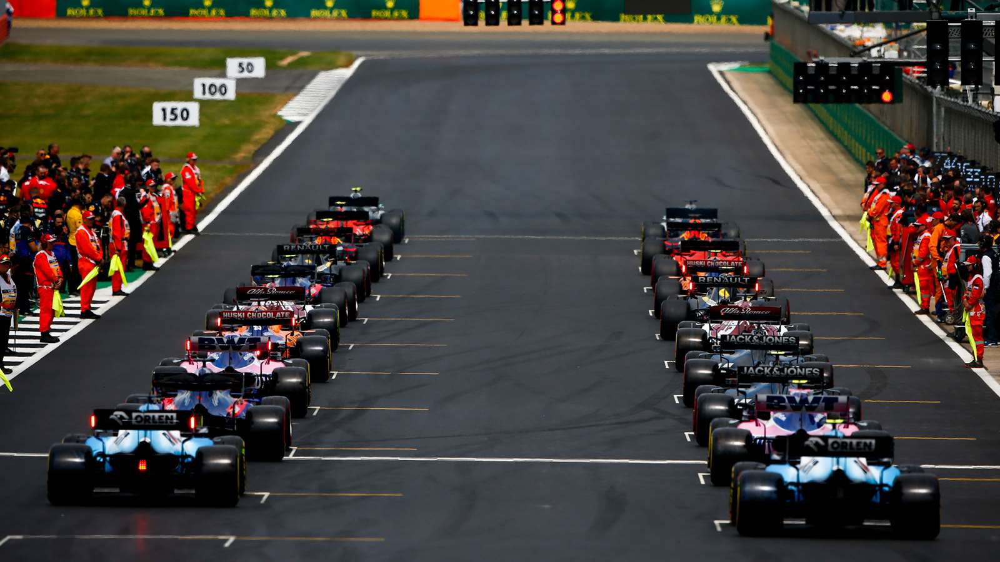

Discover F1

Formula 1 races take place in different countries and feature the most advanced racing cars in motorsport. Teams and drivers compete throughout the season to earn points and win the World Championship.
Formula 1 is more than just speed. Teams must make important strategic decisions during every race, including tire choices and pit stop timing. These decisions can often determine the outcome of a Grand Prix.